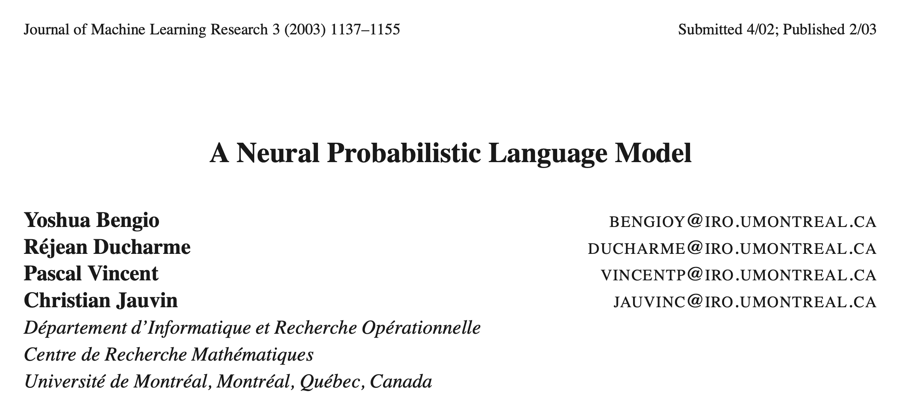

Word vectors and recurrent networks
Class 4 of 24: Natural Language Processing
CSE 4811 / DS 4213 (Fall 2026)
Muhammad Anwarul Azim
Lecturer, Dept. of CSE
United International University
Recap
An n-gram model gives each word a probability from the last N − 1 words, counted in the training texts.
The same counts write text: each next word is drawn from its probabilities.
Perplexity is e to the mean loss per word on new text. Lower is better.
Add-one, add-k and backoff give every n-gram a probability above 0.
Perplexity on C1
1 added to every countthe best k
We measured each model by its perplexity on the 4,000 dev articles.
With 1 added to every count, the perplexities are 6,176, 43,613 and 87,069.
With the best k, the bigram model reaches 5,103, and the trigram model 33,752.
Problem: even with the best k, the trigram model is far behind, because most of its trigrams were never seen.
What is missing?
filmandmovietwo separate rows of counts
All three only repair counts. None of them knows that two words are alike.
To the counts, film and movie are two separate words, as different as film and match.
Can a model learn which words are alike?
Part 1: Words as vectors
Each word becomes a vector, learned from the loss.
What can counting not do?
Every model so far counts n-grams in the training texts.
Each extra word of history multiplies the number of cells in the table by more than 100,000.
With a longer history, most n-grams of a new text never occur in the training texts.
Backoff uses a shorter history when the long one never occurs. It gives a probability, but throws away context.
Problem: counting cannot use a long history, because most long n-grams never occur in the training texts.
How long did counting last?
The bigram idea is more than a hundred years old: Markov used it in 1913, and Shannon in 1948.
In 1972 Spärck Jones gave rare words more weight in search: the IDF in TF-IDF.
From 1978, IBM's speech recognizers predicted each word from the two words before it, using counts.
In 2003 Bengio and his colleagues proposed a neural network that learns a vector for each word.
From 2006 to 2016, Google Translate used a statistical system built on counts of words and phrases.
Word2vec learned word vectors in 2013. Google Translate became neural in 2016, and for Bangla in 2017.
So counting lasted about a hundred years, and search still uses it today.
Does the model know film and movie are alike?
Ten toy articles
Seven new articles
match star film wins
star wins match
match star wins match
song star wins match
match wins match
wins match
star film song film wins
star film star song film wins
film star song star film
song star film match
film star wins
star movie song movie wins
song star movie match
star movie song star movie
match star movie wins
song movie wins
star movie song film wins
| match | star | film | movie | wins | song | </s> | Total | |
|---|---|---|---|---|---|---|---|---|
| film star | 0 | 0 | 0 | 0 | 1 | 2 | 0 | 3 |
| movie star | 0 | 0 | 0 | 0 | 0 | 0 | 0 | 0 |
Test headline
Movie star wins
Seven new articles join the ten. Six of them use movie, which means the same as film.
Like film, movie comes after star and song, and before song, wins and match.
In the 17 articles, the history film star is followed by song 2 times and by wins once.
The test headline starts with movie star. This history never occurs in the 17 articles.
Which word comes after movie star?
The counts after movie star
Test headline
Movie star wins
| match | star | film | movie | wins | song | </s> | Total | p(\text{wins} \mid \text{history}) | ||
|---|---|---|---|---|---|---|---|---|---|---|
| Counts | film star | 0 | 0 | 0 | 0 | 1 | 2 | 0 | 3 | 1/3 |
| movie star | 0 | 0 | 0 | 0 | 0 | 0 | 0 | 0 | 0/0 | |
| Add-one | movie star | 1 | 1 | 1 | 1 | 1 | 1 | 1 | 7 | 1/7 |
| Backoff | movie star | 0 | 0 | 5 | 6 | 4 | 2 | 0 | 17 | 4/17 |
After film star, the counts give wins a probability of 1/3.
After movie star, every count is 0, so the counts give 0/0: no probability at all.
Add-one has never seen this history, so it knows nothing and gives each of the 7 next words 1/7.
Backoff drops movie and uses the shorter history star, so wins gets 4/17. The word before star plays no part.
Problem: what the counts learned about film star is never used for movie star, although film and movie are used alike.
What makes two words alike?
We hide one word and count which words fill the blank in the 17 articles.
Film and movie both fill the blank between star and song.
Between song and wins, film and movie fit again, and star fits once.
Words that fit the same blanks are used alike, so we look at a word together with the words around it.
How is a word written now?
| match | star | film | movie | wins | song | |
|---|---|---|---|---|---|---|
| film | 0 | 0 | 1 | 0 | 0 | 0 |
| movie | 0 | 0 | 0 | 1 | 0 | 0 |
| match | 1 | 0 | 0 | 0 | 0 | 0 |
\cos(\text{film}, \text{movie}) = 0
\cos(\text{film}, \text{match}) = 0
In the bag of words, film is a one-hot vector: 1 in its own column and 0 in all others.
Movie and match are one-hot vectors too, each with its 1 in its own column.
Two different words never share a 1, so their cosine is 0: their vectors are at right angles.
So film is as far from movie as it is from match.
A few numbers for each word
| film | −1.21 | −1.45 | −2.53 |
|---|---|---|---|
| movie | −2.20 | 0.62 | −1.41 |
| match | 0.85 | −1.69 | 0.96 |
In place of a one-hot vector, each word now gets a vector of 3 numbers.
The vectors of film and movie point in similar directions: their cosine is 0.63.
Match points in a very different direction: its cosine with film is −0.15.
These numbers are not chosen by hand. They are learned from the 17 toy articles.
The paper

The neural language model we build next follows this paper.
Yoshua Bengio and three colleagues at the Université de Montréal wrote the paper.
It appeared in 2003 in the Journal of Machine Learning Research.
Three of the authors presented a shorter version in 2000 at NIPS, the conference now called NeurIPS.
Three researchers

Turing Award
2018
Yoshua Bengio
Université de Montréal and Mila
Neural language models and word vectors
Turing Award
2018
Nobel Prize
2024
Geoffrey Hinton
University of Toronto
Backpropagation, with Rumelhart and Williams, 1986

Turing Award
2018
Yann LeCun
New York University
Convolutional networks that read handwritten digits
In the early 2000s, these three were among a small group of researchers who still worked on neural networks.
In 2019 all three received the Turing Award for 2018, for making deep neural networks a critical part of computing.
In 2024 Hinton and John Hopfield shared the Nobel Prize in Physics, for discoveries that enable machine learning with neural networks.
Three ideas of the paper
The paper builds its model on three ideas.
First, each word of the vocabulary gets a vector of a few numbers.
Second, the model predicts the next word from the vectors of the previous words.
Third, the vectors and the weights of the model are learned together from the training text.
Solved: words used alike can get nearby vectors, so what the model learns for film can also serve movie.
A vector for each word
| E | |||
|---|---|---|---|
| <s> | 0.13 | −0.13 | 0.64 |
| match | 0.10 | −0.54 | 0.36 |
| star | 1.30 | 0.95 | −0.70 |
| film | −1.27 | −0.62 | 0.04 |
| movie | −2.33 | −0.22 | −1.25 |
| wins | −0.73 | −0.54 | −0.32 |
| song | 0.41 | 1.04 | −0.13 |
e(\text{film}) = [\,-1.27,\ -0.62,\ 0.04\,]
The vector of each word is a row of a table E with m = 3 columns. Before training, its numbers are random.
Looking up a word means taking its row of E.
One table E is used for both words of the history: movie has the same row whether it comes first or second.
With m = 3, each word is a point in space: its three numbers are x, y and z.
Training changes the numbers of E, so the points move.
The neural language model
L = -\log \hat{y}_{\text{wins}} = -\log 0.055 = 2.90
The model predicts the next word from its history of two words: here, wins from film star.
First, it looks up the vectors of film and star: their rows of E.
It joins the two vectors into one vector e of 6 numbers.
The hidden layer turns e into 8 numbers with W, b and the sigmoid σ. Bengio et al. used tanh in place of σ.
The output layer gives a score to each possible next word.
Softmax turns the 7 scores into probabilities. With random weights, they do not yet fit the text.
The loss is -\log \hat{y} for the true next word, wins: here 2.90.
Training
Naive Bayes
Neural language model
gradient descent
\theta_{t+1} = \theta_t - \eta \nabla Lfor each of E, W, b and U
In Naive Bayes, the table is counted once from the training texts.
In the neural model, the probabilities are computed from the numbers in E, W, b and U.
Gradient descent changes E, W, b and U, each by a small step of size η against its gradient.
Solved: this model learns from its loss, which Naive Bayes could not do.
What is learned?
sportsentertainment
Mean loss per word
p(\text{next word} \mid \text{history})
Each word sits at the three numbers of its row of E. Before training, these numbers are random.
In 3,000 steps of gradient descent, the rows of E change, and the mean loss per word falls from 2.072 to 0.801.
Film and movie fit the same blanks, and the line between them ends 2.55 long. The line from film to match is 4.05.
Neither model has seen movie star. The neural model predicts almost as it does after film star; add-one knows nothing and gives each word 1/7.
Seen from every side, film and movie stay close, so what the model learns about film also applies to movie.
What is learned on C1?
Dev loss per word
Unigram
Bigram
Trigram
Neural
All dev words174,640 words
Unseen trigram84.3% of the dev words
Seen trigram15.7% of the dev words
Nearest words by cosine
presidential
national politics
- democratic0.92
- republican0.89
- congressional0.87
- th0.87
- jewish0.85
soccer
sports
- duke0.90
- hockey0.90
- reds0.89
- basketball0.89
- bowl0.89
star
entertainment
- oprah0.85
- actor0.82
- craig0.80
- bell0.79
- ross0.79
film
entertainment
- music0.87
- celebrities0.85
- lee0.83
- bluegrass0.82
- media0.82
We train one neural model for each topic. It has m = 30 and, like the trigram model, two words of history.
Each n-gram model uses its best k. On the same dev words, the neural model has the lowest loss, 7.29.
Most dev words, 84.3%, end a trigram that never occurs in the training texts of their topic. On these, the neural model is best.
On the other 15.7%, the trigram model is best: where a trigram count exists, it is better than the neural model.
Words used alike get nearby rows of E, as film and movie did: presidential is nearest to democratic and republican.
Not every word gets neighbors this clear. For song and match, most of the five nearest words are unrelated.
The neural model writes
Topic
Words
Neural language model
Like the n-gram models, the neural model writes one word at a time, drawing each next word from its probabilities.
Its text stays on the topic and mixes Bangla and English.
Its word order is less fluent than the trigram model's. The trigram model follows only trigrams seen in training.
Counting and learning
| N-gram counts | Neural language model | |
|---|---|---|
| Numbers to store | 1.4 \times 10^{15} cells for trigrams | V \times m in E, plus W, b and U |
| Unseen history | add-one: 1/7 for each next word | close to its prediction after film star |
| Similar words | each word counted on its own | can give them nearby vectors |
| How it is made | counted from the training texts | learned by gradient descent |
| Window | fixed: the last N - 1 words | fixed: the last N - 1 words |
We compare the two ways of building a language model.
Counting needs a cell for every possible n-gram. The neural model needs only E, W, b and U.
The history movie star never occurs. Add-one gives each next word 1/7; the neural model predicts almost as after film star.
Counts treat each word on its own. The neural model can give similar words, such as film and movie, nearby vectors.
An n-gram model is counted once. The neural model is trained by gradient descent on its loss.
Both models see only a fixed number of previous words. Part 3 removes this limit.
Part 2: Word2vec
Word2vec learns word vectors from a simpler task than predicting the next word.
Where does the work go?
\hat{y}_{\text{wins}} = \dfrac{\exp(z_{\text{wins}})}{\sum_{j} \exp(z_j)}
The neural language model on C1 predicts the next word from two word vectors of 30 numbers each.
The hidden layer turns these 60 numbers into 50 numbers, with 3,000 multiplications.
The output layer gives a score to each of the 110,609 next words, </s> included: 5,530,450 multiplications.
Softmax divides by the sum over all 110,609 words, so even the probability of the true next word needs every score.
Problem: almost all of the work is in the output layer, and this work grows with the size of the vocabulary.
Problem: almost all of the work is in the output layer, and this work grows with the size of the vocabulary.
Do we need all this work if we want only the word vectors?
Two simpler models
CBOW
Skip-gram
\text{score} = c \cdot w
w a word's vector as the middle word
c its second vector, as a neighbor
30 \times 110{,}608 = 3{,}318{,}240multiplications for each prediction, with softmax over every word
In 2013, Mikolov and his colleagues at Google wanted only the word vectors, so they made the model simpler.
CBOW, the continuous bag of words, averages the vectors of the words on both sides and predicts the middle word.
Skip-gram does the reverse: from the middle word star, it predicts each of its neighbors, the words beside it.
Neither model has a hidden layer. Each word has two vectors, w as the middle word and c as a neighbor.
With softmax over every word, each prediction still needs 110,608 scores. </s> is never a neighbor.
Problem: 3,318,240 is less than 5,530,450, but it still grows with the size of the vocabulary.
Can we ask the model a smaller question?
A yes-or-no question
L = -\log \sigma(c_{\text{film}} \cdot w_{\text{star}}) - \log\big(1 - \sigma(c_1 \cdot w_{\text{star}})\big) - \log\big(1 - \sigma(c_2 \cdot w_{\text{star}})\big)
3 \times 30 = 90multiplications, not 3,318,240
Mikolov and his colleagues then asked only whether a word is a real neighbor of the middle word.
The probability of yes is σ(c · w), as in logistic regression. For star and film, it should be near 1.
We draw 2 random words, frequent words more often. Their pairs with star should get no: this is negative sampling.
For a no pair, the right answer has probability 1 − σ(c · w). The loss adds −log of each right answer's probability.
Like the word2vec program, our run starts every c at 0, so every answer starts at 0.5.
After training on C1, star and film get 0.87, and the two random pairs almost 0.
One real pair and its 2 random pairs need only 3 dot products of 30 numbers each.
Solved: the work of learning the vectors no longer depends on the size of the vocabulary.
What do the vectors show?
film
- festival0.97
- movie0.97
- fest0.96
- disney0.95
- avengers0.95
presidential
- primary0.97
- republican0.96
- candidate0.96
- candidates0.95
- debate0.95
নির্বাচন
- নির্বাচনের0.94
- ইসি0.93
- কমিশনকে0.92
- তফসিল0.92
- ব্যালট0.91
ক্রিকেট
- বিসিবি0.94
- পিসিবি0.93
- বিসিসিআই0.91
- পাপন0.90
- আইসিসি0.89
We train skip-gram with negative sampling on the 40,000 C1 training texts, with m = 30 and 5 random words for each pair.
Words with the same neighbors are pulled toward the same vectors c, so their vectors w end up close: film is near movie.
The nearest words of presidential are words of an election campaign.
Bangla words have clear nearest words too: নির্বাচন is near ইসি, the Election Commission, and ক্রিকেট near বিসিবি, the Bangladesh Cricket Board.
On far more text, the word nearest to king − man + woman, apart from these three, is queen. On C1, it is not.
Word2vec does not predict the next word, but for years other models used its vectors w as their table E.
Part 3: Recurrent networks
A recurrent network reads a sentence one word at a time and passes its hidden layer on to the next word.
How far back can the model see?
We return to predicting the next word, now after The stars of the film.
The neural language model sees only the last two words, the and film.
Seeing only the and film, a model would likely choose wins, as if film were the subject.
Of win and wins, the right one is win, because its subject is stars, not film.
Problem: the model cannot see stars, which lies outside its window of two words.
Would a wider window help?
Why not a wider window?
Window of 2 words2 \times 30 \times 50 = 3{,}000weights in W
Window of 5 words5 \times 30 \times 50 = 7{,}500weights in W
A window of five words would cover stars.
But a longer sentence can put the subject further back, outside the window again.
W has its own weights for each place in the window: 3,000 for two words and 7,500 for five.
Problem: a word that matters can lie outside any fixed window, and each place needs its own weights.
Can one set of weights read a history of any length?
A simple recurrent network
h = \sigma(We + b)
h_t = \sigma(W_e\, e_t{} + b)
h_t = \sigma(W_h\, h_{t-1}{} + W_e\, e_t + b)
The neural language model computes its hidden layer h from e, the joined vectors of the window.
A simple recurrent network reads one word at a time. Its input is et, the row of E for word t, times We.
It adds one term: ht−1, the hidden layer after the previous word, times Wh. This hidden layer is called the state.
The first state, h1, comes from the word The and from h0, which is all zeros.
The second state, h2, comes from h1 and the word stars, so it depends on both words.
Each later state comes from the state before it and the next word, with the same Wh, We and b.
The next word is predicted from the last state, h5, through U and softmax.
Solved: the state depends on every earlier word, and the number of weights does not grow with the length of the history.
Training through time
L = (L_1 + L_2 + L_3 + L_4 + L_5) / 5
The network predicts the next word at each of the five words from The to film.
Each prediction has a loss, −log ŷ for the true next word. Training lowers the mean loss per word.
Backpropagation sends the gradient of each loss back along the chain, through every earlier state.
Each word is one time step, so this is called backpropagation through time. Gradient descent then changes E, We, Wh, b and U.
The gradient from win must go back three time steps, from h5 to h2, to reach stars. What happens to it on the way?
What happens on the way back?
| Steps back | 1 | 2 | 3 | 4 | 5 | 6 | 7 | 8 |
|---|---|---|---|---|---|---|---|---|
| Factor 2 | 2 | 4 | 8 | 16 | 32 | 64 | 128 | 256 |
| Factor 0.5 | 0.5 | 0.25 | 0.125 | 0.063 | 0.031 | 0.016 | 0.008 | 0.004 |
Clipping\lVert [6,\ 8] \rVert = 10 > \tau = 5: \quad [6,\ 8] \times \dfrac{5}{10} = [3,\ 4]
On the way back, each time step multiplies the gradient by Wh and by the slope of σ, which is at most 0.25.
With one hidden unit and Wh = 8, the factor can be 8 × 0.25 = 2. After 8 steps the gradient is 256 times larger: an exploding gradient.
An exploding gradient is clipped: if it is longer than a threshold τ, it is shortened to length τ, keeping its direction.
With Wh = 2, the factor is at most 0.5, and after 8 steps only 0.004 of the gradient is left: a vanishing gradient.
From h5 back to h2, where stars was read, 3 steps leave 0.125. In the longer sentence, 6 steps leave 0.016.
Problem: the gradient vanishes, so the network does not learn to keep information about a word far back.
Can a network carry information over many words without shrinking it?
The LSTM
[1,\ 0] \odot [4,\ 6] = [4,\ 0]
c_t = f_t \odot c_{t-1} + i_t \odot g_t
h_t = o_t \odot \tanh(c_t)
Hochreiter and Schmidhuber proposed the long short-term memory, or LSTM, in 1997. Its memory cell ct carries information forward.
A gate is a vector of numbers between 0 and 1. With ⊙, number by number, a 1 keeps a number and a 0 removes it.
The forget gate ft, computed with σ from ht−1 and et, decides how much of the old cell to keep. It was added in 2000.
The input gate it decides how much to add of gt, new numbers between −1 and 1 computed with tanh.
So the cell is updated by addition: the kept part of the old cell plus the added part.
The output gate ot decides how much of the cell to show as the state ht.
What happens to the gradient on its way back along the cell?
What happens along the cell?
| Steps back | 1 | 2 | 3 | 4 | 5 | 6 | 7 | 8 |
|---|---|---|---|---|---|---|---|---|
| Forget gate 0.99 | 0.99 | 0.98 | 0.97 | 0.96 | 0.95 | 0.94 | 0.93 | 0.92 |
| Simple network 0.5 | 0.5 | 0.25 | 0.125 | 0.063 | 0.031 | 0.016 | 0.008 | 0.004 |
c_t = f_t \odot c_{t-1}{} + i_t \odot g_t
Along the cell, each step back multiplies the gradient only by ft, with no Wh and no slope of σ.
With ft = 0.99, 0.998 ≈ 0.92 of the gradient is left after 8 steps, not 0.004.
So the cell can carry the fact that stars is plural to the blank, and the network can predict win.
Solved: with the forget gate near 1, the cell keeps information over many words.
Translation with two networks
Encoder
Decoder
In 2014, Sutskever and his colleagues at Google translated with two LSTMs. Here the first, the encoder, reads a Bangla sentence.
Its last state, h4, is passed to the second LSTM, the decoder.
The decoder is a language model that starts from h4. It writes the English sentence one word at a time.
ঢাকায় is the first Bangla word, but Dhaka is the fifth English word. The decoder must find it in h4.
Problem: the decoder sees the whole Bangla sentence only through one vector, h4, however long the sentence is.
Problem: the decoder sees the whole Bangla sentence only through one vector, h4, however long the sentence is.
What else is hard for a recurrent network?
What is still hard?
Each state waits for the one before it, so training cannot process the words of a sentence in parallel, and is slow.
Even with ft = 0.99, only 0.99200 ≈ 0.13 of the gradient is left after 200 words.
In translation, the decoder never sees the Bangla words themselves, only the last state h4.
When the decoder writes Dhaka, can it look directly at ঢাকায়?
What we learned
What we learned
References
Textbook
Jurafsky, D. and Martin, J. H. (2026). Speech and Language Processing, 3rd ed. draft, August 2026. Chapter 6, section 6.5, pp. 163–168 (the feedforward neural language model, eq. 6.24, fig. 6.14). Chapter 5, section 5.5, pp. 136–142 (word2vec; eqs. 5.15, 5.16 and 5.21); section 5.7, pp. 143–145 (analogies). Chapter 14, sections 14.1 and 14.2, pp. 302–309 (eqs. 14.1–14.6, pp. 304–307); section 14.5, pp. 314–318 (the LSTM, eqs. 14.20–14.27, p. 316); sections 14.7 and 14.8, pp. 319–323 (the encoder-decoder model and its bottleneck).
Papers
Bengio, Y., Ducharme, R., Vincent, P. and Jauvin, C. (2003). A neural probabilistic language model. Journal of Machine Learning Research 3, 1137–1155.
Mikolov, T., Chen, K., Corrado, G. and Dean, J. (2013). Efficient estimation of word representations in vector space. ICLR 2013 workshop, arXiv:1301.3781. Mikolov, T., Sutskever, I., Chen, K., Corrado, G. and Dean, J. (2013). Distributed representations of words and phrases and their compositionality. NIPS 26, 3111–3119. Mikolov, T., Yih, W. and Zweig, G. (2013). Linguistic regularities in continuous space word representations. NAACL-HLT 2013, 746–751.
Elman, J. L. (1990). Finding structure in time. Cognitive Science 14(2), 179–211. Hochreiter, S. and Schmidhuber, J. (1997). Long short-term memory. Neural Computation 9(8), 1735–1780. Gers, F. A., Schmidhuber, J. and Cummins, F. (2000). Learning to forget: continual prediction with LSTM. Neural Computation 12(10), 2451–2471.
Pascanu, R., Mikolov, T. and Bengio, Y. (2013). On the difficulty of training recurrent neural networks. ICML 2013, PMLR 28(3), 1310–1318. Sutskever, I., Vinyals, O. and Le, Q. V. (2014). Sequence to sequence learning with neural networks. NIPS 27, 3104–3112.
References
Data and code
The scripts c04_build.py (the toy neural language model on the ten toy articles of class 2 and seven more), c04_neural_c1.py (one neural language model per topic on C1) and c04_word2vec_c1.py (skip-gram with negative sampling on C1), on the C1 training set (40,000 texts) and dev set (4,000 texts).
History
Markov (1913), on vowels and consonants in Eugene Onegin. English translation: Science in Context 19(4), 591–600, 2006. Shannon (1948). Bell System Technical Journal 27(3), 379–423. Spärck Jones (1972). Journal of Documentation 28(1), 11–21. Bahl et al. (1978). ICASSP 1978, 422–424. Katz (1987). IEEE Transactions on Acoustics, Speech, and Signal Processing 35(3), 400–401. Rumelhart, Hinton and Williams (1986). Nature 323, 533–536. Robertson et al. (1994), BM25. Okapi at TREC-3. Bengio, Ducharme and Vincent (2000). NIPS 13, 932–938. Google blogs of 28 April 2006, 27 September 2016 and 25 April 2017. ACM Turing Award 2018; Nobel Prize in Physics 2024.
Photos
Yoshua Bengio: Xuthoria, 2025. CC BY-SA 4.0, via Wikimedia Commons, File:ICLR 2025 - Yoshua Bengio 03.jpg; cropped and made grayscale.
Geoffrey Hinton: Arthur Petron, 2024. CC BY-SA 4.0, via Wikimedia Commons, File:Geoffrey E. Hinton, 2024 Nobel Prize Laureate in Physics.jpg; cropped and made grayscale.
Yann LeCun: Jérémy Barande / Ecole polytechnique Université Paris-Saclay, 2018. CC BY-SA 2.0, via Wikimedia Commons, File:Yann LeCun (41208595340).jpg; cropped and made grayscale.
Thank you.
p